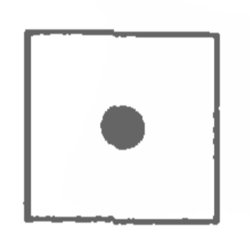
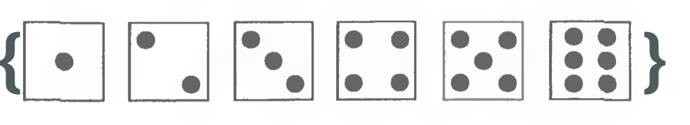
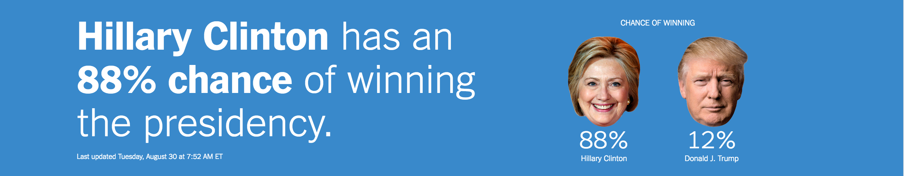
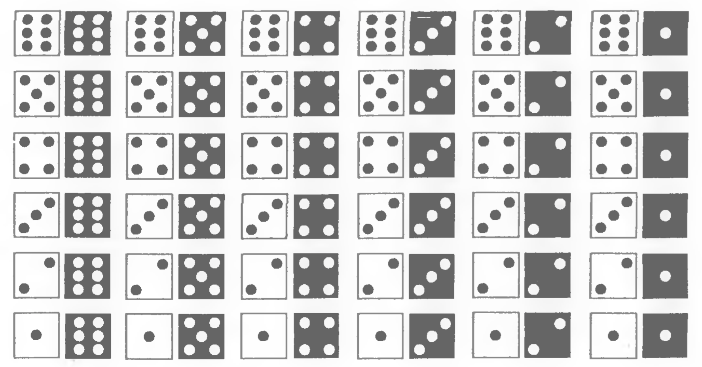

class: center, middle, theBlackBackground count: False # Probability --- ## Basics .left-column[ ## Experiment ] .right-column[ - Observation of random occurence - Toy examples: + Rolling a die, tossing a coin - Serious examples: + Dropping a ball and a feather in vacuum + Measuring light distorion - How about these? + Measuring economic effect of earthquakes + Vietnam draft lottery effect on education and wages ] --- ## Basics .left-column[ ## Experiment ## Elementary outcomes ] .right-column[ - Each unique possible outcome - Toy example:  ] --- ## Basics .left-column[ ## Experiment ## Elementary outcomes ## Sample space and event ] .right-column[ - The <b>sample space</b> is the set of elementary outcomes, usually denoted by `\( \Omega \)`  - An <b>event<b> is a subset of the sample space. .footnote[.red[*] A set is a collection of distinct objects] ] --- ## Basics .left-column[ ## Experiment ## Elementary outcomes ## Sample space and event ] .right-column[ ## Remember your set operations? Let A = {1,2,3}, B = {2,4,5} be two subsets of `\( \Omega \)` = {1, ..., 10} .left[ $$A \cup B $$ $$A \cap B $$ $$A - B = A \backslash B$$ $$A^{c} $$ $$|A| $$ $$ \emptyset = \\{ \\} $$ ] ] --- ## Basics .left-column[ ## Experiment ## Elementary outcomes ## Sample space and event ## Probability ] .right-column[ ## Defining probability That's hard! Our first impulse is to talk about <b>frequencies</b>: If we toss a coin an infinite number of times, heads will come up 50% of the time. However.red[*]:  We need a working definition. <br><br> .footnote[.red[*]See more on page 35 of the textbook.] ] --- ## Probability .left-column[ ## Naive definition ] .right-column[ ## Classical or Naive probability $$ P_{Classical}(A) = \frac{|A|}{|\Omega|} = \frac{\text{\# Favorable outcomes}}{\text{\# Total outcomes}} $$ <br> When is this definition applicable? + Symmetry + Design When is it not applicable? ] --- ## Probability .left-column[ ## Naive definition ## Examples ] .right-column[ ## Two dice are rolled Take the sum of the pips. Is an 11 more likely than a 12?  ] --- ## Probability .left-column[ ## Naive definition ## Examples ## Counting ] .right-column[ ## Multiplication rule <font size = 2>In English: There are 6 ways of pairing 2 entrees and 3 deserts</font> + When an experiment E can be split into two sub-experiments A and B, the total number of outcomes in E equals the numbers of outcomes in A and B multiplied. "Proof": Tree branching. <br> <br> <br> Applications [📓]: + Sampling with replacement + Permutations + Sampling without replacement ] --- ## Probability .left-column[ ## Naive definition ## Examples ## Counting ## Non-naive definition ] .right-column[ ## Kolmogorov's axioms: Let `\( \Omega \)` be the sample space, and let `\( A \)` be an event. 1. Positivity $$P(A)\geq 0 $$ 2. Unitarity $$P(\Omega) = 1$$ 3. Additivity.red[*] If A and B are disjoint $$P(A \cup B) = P(A) + P(B)$$ <br> All other properties can be derived from these [📓] .footnote[.red[*] <font size = 1>Actually, Kolmogorov's axioms hold for an infinite collection of sets.</font>] ] --- ## Probability .left-column[ ## Naive definition ## Examples ## Counting ## Non-naive definition ## Proof example ] .right-column[ ## Proving properties Let's prove that $$P(A^{c}) = 1 - P(A)$$ <font size=2>Thee probabiliy of A not happening equals 1 minus the probabiliy of it happening</font> $$P(\Omega) = 1 \qquad \text{From axiom 2}$$ $$P((\Omega \backslash A) \cup A) = 1 \qquad \text{Def of union}$$ $$P(A^{c} \cup A) = 1 \qquad \text{Def of complement}$$ $$P(A^{c}) + P(A) = 1 \qquad \text{Axiom 3}$$ $$P(A^{c}) = 1 - P(A) \qquad \text{Rearranging}$$ Done! Have fun doing your homeworks. ]